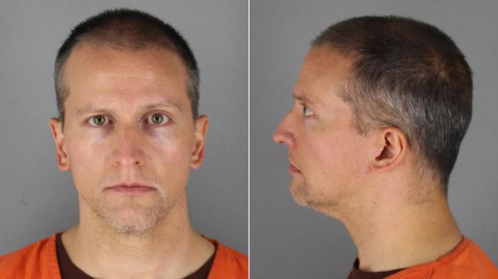

Eks Polisi AS Pembunuh George Floyd Disidang, Jaminan Ditetapkan Rp 17 M

Sumber :https://www.detik.com/
Eks polisi Minneapolis, Derek Chauvin, yang menjadi terdakwa utama dalam kasus pembunuhan George Floyd telah dihadirkan dalam sidang perdana. Pengadilan setempat menetapkan uang jaminan untuk Chauvin sebesar US$ 1,25 juta atau setara Rp 17,5 miliar.
Seperti dilansir CNN, Selasa (9/6/2020), Chauvin (44) dihadirkan secara virtual di hadapan hakim pengadilan Hennepin County di Minneapolis pada Senin (8/6) waktu setempat. Dalam sidang perdana ini, hakim Jeannice Reading mengabulkan permohonan jaksa soal penetapan uang jaminan sebesar US$ 1,25 juta, atau US$ 1 juta dengan syarat tertentu.
Dengan kata lain, besarnya uang jaminan untuk Chauvin bisa turun ke angka US$ 1 juta (Rp 14 miliar) jika syarat-syarat tertentu itu dipenuhi.
Syarat tertentu itu termasuk taat hukum, bersedia untuk hadir dalam sidang mendatang, tidak bekerja dalam kapasitas keamanan atau penegak hukum, menyerahkan senjata api atau amunisi dan setiap izin kepemilikan senjata api, tidak meninggalkan Minnesota dan tidak melakukan kontak dengan keluarga Floyd.
Pengacara yang mewakili Chauvin, Eric Nelson, menyatakan tidak keberatan dengan besarnya uang jaminan yang ditetapkan pengadilan itu.
Chauvin yang terekam kamera menekan lututnya ke leher Floyd selama nyaris 9 menit hingga menewaskannya pada 25 Mei lalu, ditangkap dan didakwa atas pembunuhan (murder) tingkat kedua dan pembunuhan tak disengaja (manslaughter) tingkat kedua.
Pembelaan terdakwa belum disampaikan pada sidang perdana, karena pengadilan di Minnesota mengatur bahwa pembelaan akan disampaikan pada agenda sidang selanjutnya. Sidang selanjutnya ditetapkan akan digelar pada 29 Juni mendatang
pengacara ketiga terdakwa menyampaikan bahwa klien mereka hanyalah junior dari Chauvin, yang saat itu telah nyaris dua dekade mengabdi pada Kepolisian Minneapolis. Pengacara ketiga terdakwa lain menyatakan klien mereka berupaya mengintervensi secara verbal aksi Chauvin, namun mereka tak punya pilihan selain tunduk pada Chauvin yang paling senior.
kembali


 Copyright@2020
Copyright@2020